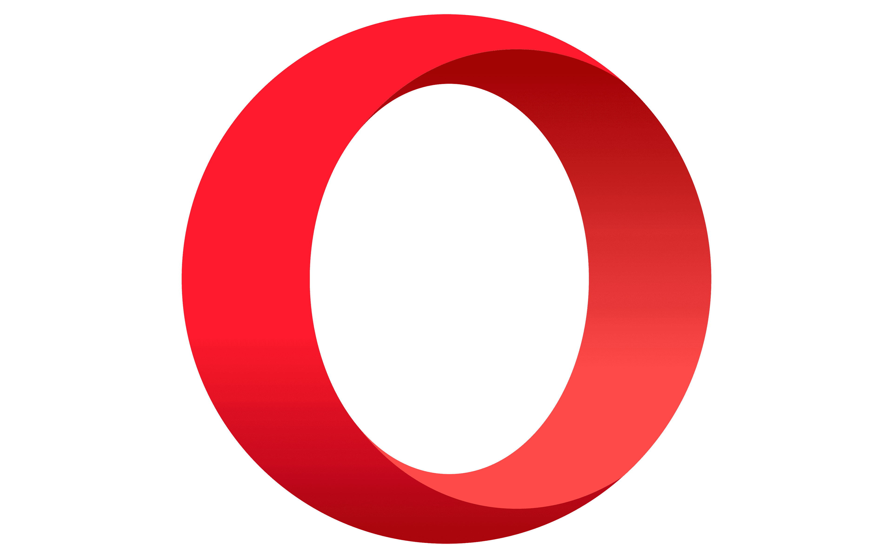

Navegadores
Tabla comparativa
Martinez Ortiz Eduardo Antonio 176535
| |
Google |
FireFox |
Microsoft Edge |
Opera |
vivaldi |
Brave |
Safari |
| Logo |
 |
 |
 |
 |
|
|
 |
| Desarollo |
Google |
Corporación Mozilla, Fundación Mozilla |
Microsoft |
Opera GX |
Vivaldi Technologies |
Brendan Eich |
Apple |
| Lenguajes |
JavaScript, Python |
C++XULXBLJavaScriptCSS,CRust |
C#C++ |
C++ |
C++ |
JavaScriptPythonc# |
C++Objective-C Swift |
| WebEngine |
MotorCrhome |
MotorGecko; Quantum; SpiderMonkey |
MotorEdge |
MotorOGX |
MotorBlink |
MotorBlink; V8 |
MotorWebKit |
| Ultima version |
107 |
97 |
109.0.1518.78 (info) (2 de febrero de 2023) |
95.0.4635.46 |
170 |
1.48 |
15.2 |
| Sitio Web |
 |
Link |
Link |
Link |
Link |
Link |
Link |
Link |
| Captura de pantalla |
 Captura de pantalla |
 Captura de pantalla |
 Captura de pantalla |
 Captura de pantalla |
 Captura de pantalla |
Captura de pantalla |
 Captura de pantalla |